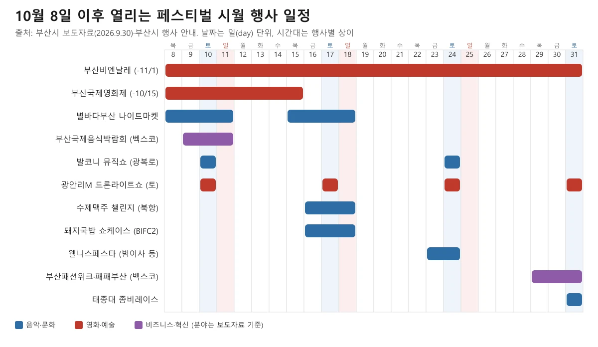
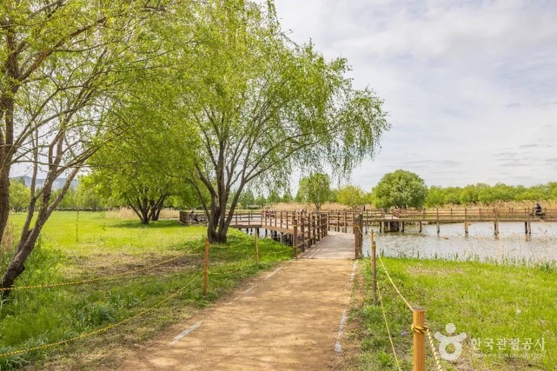
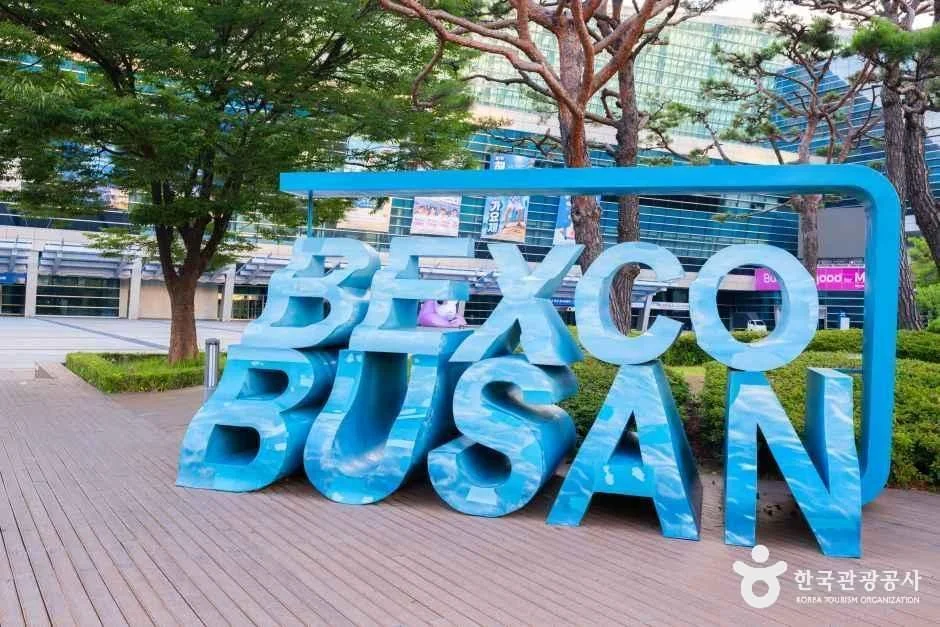
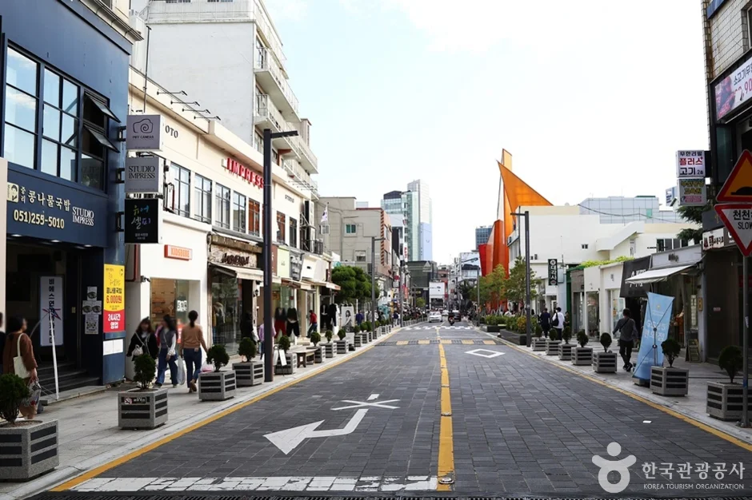
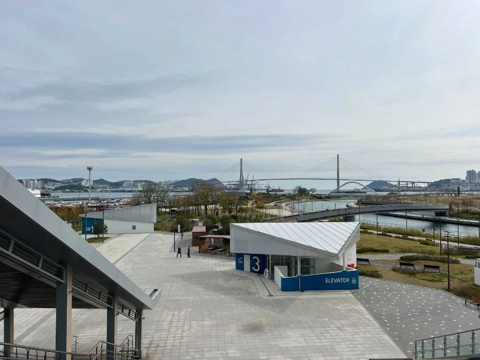
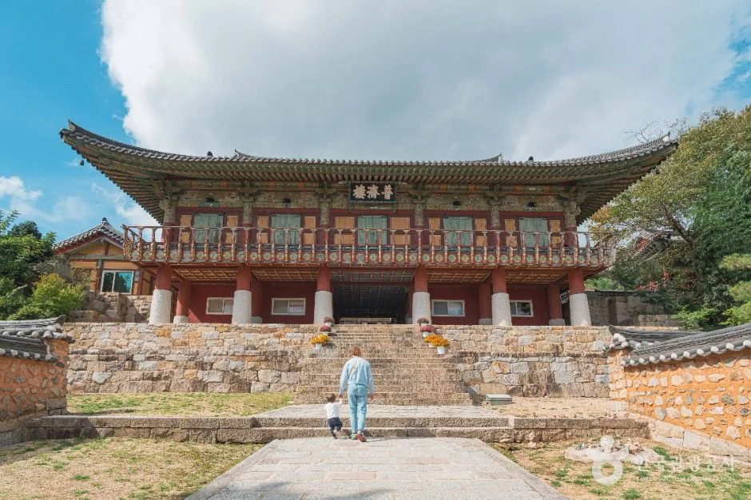
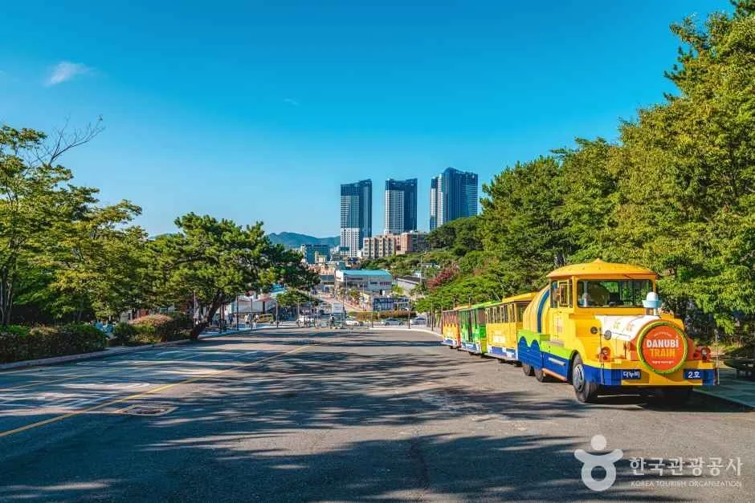
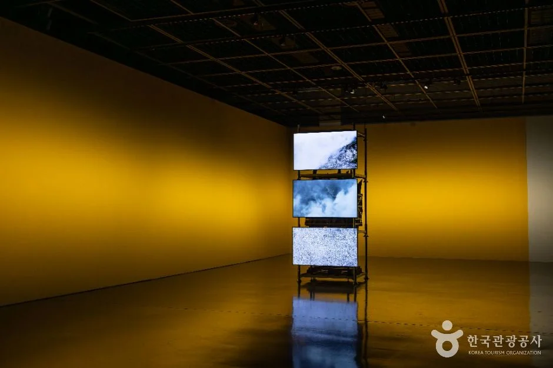

▲ 광안리 해변과 광안대교의 야경. 상시 풍경 사진이며 드론라이트쇼 장면은 아니다. 사진=한국관광공사
"22개 행사라는데, 지금 갈 수 있는 건 몇 개일까?" 부산시와 부산관광공사는 2026년 9월 30일 보도자료에서 10월 1일부터 31일까지 「2026 페스티벌 시월」을 연다고 밝혔다. 음악·문화 9개, 영화·예술 6개, 비즈니스·혁신 7개, 합쳐서 22개 행사다. 오늘은 10월 8일이다. 보도자료 표의 날짜를 오늘 기준으로 나눠 보면 이미 끝난 행사 4개, 오늘이 마지막 날인 행사 1개, 10월 8일 이후에도 이어지거나 열리는 행사 17개다. 이 글은 이미 발행한 부산국제영화제·부산불꽃축제·부산국제록페스티벌 기사와 겹치지 않도록, 남은 행사를 날짜순으로 정리하고 유무료·예약 여부와 자차 이동 전에 확인할 점을 따로 모았다.
💡 먼저 결론
보도자료와 부산시 공식 행사 안내에서 행사별 주차장·셔틀·교통통제 안내는 확인하지 못했다. 그래서 "어디에 차를 대면 편하다"는 식의 추정은 쓰지 않았다. 대신 날짜·장소·입장료·예약이 공식 자료로 확인된 행사와 확인되지 않은 행사를 나눴다. 전체 행사 일정은 비짓부산 누리집(추천여행 > 페스티벌 시월)에서 확인할 수 있다고 보도자료에 적혀 있다. 비짓부산 바로가기
1. 한눈에 보기 — 22개를 오늘(10/8) 기준으로 나누면
부산시 보도자료(관광마이스산업과, 2026년 9월 30일 오전 7시 이후 보도 가능)는 올해 슬로건을 '10월, 부산에 가면'으로 소개한다. 분야별 대표 행사는 부산국제록페스티벌, 부산국제영화제, 아시아창업엑스포(FLY ASIA)다. 보도자료 참고 표의 22개를 10월 8일 기준으로 나눈 결과는 아래와 같다.
| 구분 | 개수 | 행사 |
|---|---|---|
| 이미 끝남 | 4 | 부산국제록페스티벌, 부산파크콘서트, 부산국제공연예술마켓, 부산거리예술축제 |
| 오늘(10/8) 마지막 날 | 1 | 아시아창업엑스포(FLY ASIA, 10/7~8) |
| 진행 중이거나 앞으로 열림 | 17 | 음악·문화 7 + 영화·예술 4 + 비즈니스·혁신 6 |
| 합계 | 22 | 음악·문화 9 + 영화·예술 6 + 비즈니스·혁신 7 |
부산시와 부산관광공사는 10월 1일부터 18일까지 부산유라시아플랫폼에 통합 홍보 거점을 운영하고, 주요 행사장을 잇는 스탬프 투어도 연다고 밝혔다. 참가자는 주요 행사장에서 큐알(QR)코드로 인증해 스탬프를 쌓고, 단계에 따라 보상과 경품을 받는다. 어떤 행사장이 스탬프 대상인지, 홍보 거점이 정확히 어디인지는 보도자료에 적혀 있지 않아 확인하지 못했다.
▲ 광안리 해변과 광안대교의 야경. 상시 풍경 사진으로 드론라이트쇼 장면은 아니다. 사진=한국관광공사
2. 이미 끝난 행사 5개 — 10월 8일 전에 막을 내렸거나 오늘 끝난다
보도자료 표에 적힌 일정 기준으로 아래 5개는 오늘 이후 새로 갈 수 없다. 부산국제록페스티벌은 삼락생태공원에서 10월 2~4일 열렸고, 현장 주차·셔틀 이야기는 부산국제록페스티벌 삼락생태공원 기사에 정리해 두었다.
| 분야 | 행사 | 기간 | 장소 |
|---|---|---|---|
| 음악·문화 | 부산국제록페스티벌 | 10.2.~4. | 삼락생태공원 |
| 음악·문화 | 부산파크콘서트 | 10.2.~3. | 부산시민공원 |
| 영화·예술 | 부산국제공연예술마켓 | 10.1.~7. | 동서대 센텀캠퍼스 등 |
| 영화·예술 | 부산거리예술축제 | 10.3.~5. | 부산시민공원 |
| 비즈니스·혁신 | 아시아창업엑스포(FLY ASIA) | 10.7.~8. (오늘 마지막 날) | 벡스코 |
별바다부산 나이트마켓도 보도자료상 10월 1~4일 구간은 지났지만, 10월 8~11일과 15~18일 구간이 남아 있어 아래 일정표에 넣었다.
3. 남은 17개, 날짜순 일정표
아래 표는 보도자료 참고 표를 바탕으로 하고, 시간·입장료처럼 보도자료에 없는 정보는 부산시·비짓부산의 개별 행사 안내에서 확인된 것만 덧붙였다. 요일은 2026년 달력 기준이다(10월 8일 목요일).

▲ 10월 8일 이후 일정 타임라인. 보도자료 참고 표 기준이며, 10월 내내 열리는 원먼스페스티벌·부산고메셀렉션과 10월 26~28일 업계 행사는 넣지 않았다. 그래픽=CarPrism 직접 제작
| 일정 | 행사 | 장소 | 공식 안내로 확인된 시간·비용 |
|---|---|---|---|
| 10.6.~15. | 부산국제영화제 | 영화의전당 등 | 확인하지 못했다(별도 기사 참고) |
| 8.29.~11.1. | 2026부산비엔날레 | 부산현대미술관, 스페이스 원지, (구)부산남고등학교 | 입장료·운영시간은 비짓부산 안내에 없었다 |
| 10.8.~11. / 10.15.~18. | 별바다부산 나이트마켓 | 화명생태공원 연꽃단지(화명오토캠핑장 옆) | 목·금·토 17~22시, 일 16~21시. 입장료 안내 없음 |
| 10.9.(금)~11.(일) | 부산국제음식박람회(제23회) | 벡스코 제1전시장 3AB홀 | 10~18시. 현장 10,000원, 사전등록 시 무료 |
| 10.10. / 10.24. | 발코니 뮤직쇼 앤 스트릿 페스타 | 중구 광복로 | 시간·입장료 안내 없음 |
| 10월 매주 토요일 | 광안리M드론라이트쇼 | 광안리 해변 일원 | 10~2월 19시·21시, 무료 |
| 10.16.(금)~18.(일) | 부산수제맥주마스터스챌린지 | 북항 랜드마크부지 | 16~21시, 무료 입장 |
| 10.16.~18. | 부산돼지국밥대전(국밥쇼케이스) | BIFC2 | 입장료·시간 안내 없음 |
| 10.23.~24. | 부산웰니스페스타 | 범어사 등 | 보도자료 표 외 안내 확인 못함 |
| 10.26.~27. / 10.26.~28. | 밋인부산 / 글로벌도시관광서밋 / 글로벌미식포럼 | 웨스틴조선 / 파라다이스H / 파크하얏트, 부산시 전역 | 보도자료 표 기준 장소만 확인, 일반 참여 여부 확인 못함 |
| 10.29.~31. | 부산패션위크 / 패패부산(부산국제신발섬유패션전시회) | 벡스코 | 일반 관람·입장료 확인 못함 |
| 10.31. | 태종대 BEAT-ON 좀비레이스 | 태종대 자동차극장 | 참가 방식·접수 현황 확인 못함 |
| 10.1.~31. | 원먼스페스티벌 / 부산고메셀렉션 | 부산시 전역 | 세부 일정·입장료 확인 못함 |
표의 "10.26.~27. / 10.26.~28." 칸은 밋인부산(10.26.~27., 웨스틴조선), 글로벌도시관광서밋(10.26.~28., 파라다이스H), 글로벌미식포럼(10.26.~28., 파크하얏트·부산시 전역)을 한 줄로 묶은 것이다. 파라다이스H는 보도자료 표기를 그대로 옮겼다.
4. 이번 주말(10/9~11) — 나이트마켓, 음식박람회, 광복로, 광안리
가장 가까운 주말에는 4곳이 겹친다. 오늘(목요일) 저녁부터 열리는 별바다부산 나이트마켓은 화명생태공원 연꽃단지(화명오토캠핑장 옆, 북구 낙동강자전거길 1425)에서 9월 26일부터 10월 18일까지 목·금·토·일 열리고, 운영 시간은 목·금·토 17~22시, 일요일 16~21시다. 전통주·막걸리 팝업, 푸드트럭, 평상·피크닉존, 지역 소상공인 플리마켓이 운영되고, 체험 프로그램은 사전 예약 또는 현장 접수로 운영되며, 예약은 event-us.kr/nightmarket/event에서 받는다고 안내돼 있다. 프로그램과 운영 시간은 현장 상황에 따라 바뀔 수 있다고 안내돼 있다. 입장료와 주차 정보는 비짓부산 안내에 없었다. 나이트마켓 안내 바로가기

▲ 화명생태공원 수변 데크길. 신록 계절에 찍은 상시 풍경이며 나이트마켓 모습이 아니다. 연꽃단지와의 위치 관계는 확인하지 못했다. 사진=한국관광공사
부산국제음식박람회(제23회)는 10월 9일(금)~11일(일) 벡스코 제1전시장 3AB홀에서 오전 10시부터 오후 6시까지 열린다. 부산시 행사 안내에는 입장료가 10,000원이며 사전등록을 하면 무료로 적혀 있다. 사전등록 방법과 마감은 부산시 안내에 없고, 공식 누리집 주소만 bife.kr로 나와 있다. 문의 전화는 부산시 행사 안내의 중국어판에 051-711-0050으로 적혀 있다(한국어·영문 안내에는 없다). 음식박람회 누리집 바로가기

▲ 벡스코 앞 'BEXCO BUSAN' 조형물. 상시 시설 사진이며 음식박람회 행사 모습이 아니다. 사진=한국관광공사
발코니 뮤직쇼 앤 스트릿 페스타는 부산시 보도자료 기준 10월 10일과 24일 광복로에서 열린다. 부산시 영문 행사 안내(2026년 8월 4일 게시)에는 이 공연이 광복로 일대, 부산브랜드숍 2층 발코니와 퍼레이드카에서 열린다고 적혀 있고, 시간·입장료는 안내에 없었다.

▲ 광복로 문화패션거리의 낮 풍경. 상시 풍경 사진이며 공연 장면이 아니다. 사진=한국관광공사
광안리M드론라이트쇼는 부산시 안내상 연중 매주 토요일 열린다. 3~9월은 20시·22시, 10~2월은 19시·21시 두 차례다. 10월 토요일은 10일·17일·24일·31일이며, 이 날짜는 부산시 안내에 따로 나열돼 있지 않아 달력으로 계산했다. 관람은 무료이고 우천·강풍·기술 문제로 취소되거나 지연될 수 있으며, 공지는 하루 전 또는 당일에 나온다. 광안리 일대 주차·교통통제는 광안리 드론라이트쇼 기사에서 따로 다뤘다.
5. 둘째 주말(10/16~18) — 북항 맥주, BIFC2 국밥, 나이트마켓 마지막 주
부산수제맥주마스터스챌린지는 2026년에는 '바이킹 비어 나이트(Viking Beer Night)'라는 부제로, 10월 16일(금)~18일(일) 북항 랜드마크부지에서 16~21시에 열리고 입장은 무료다. 부산시 행사 안내의 주최는 부산광역시이며 포스터에는 부산경제진흥원과 부산항만공사도 표기돼 있다. 예약·주차 안내는 없었다. 행사 누리집은 busanbeerchallenge.com으로 안내돼 있다.

▲ 북항친수공원 전경. 북항 랜드마크부지와는 별개 장소의 상시 사진이며 행사 모습이 아니다. 사진=한국관광공사
부산돼지국밥대전은 부산시 행사 안내상 2026년 8월 26일(수)~10월 18일(일)에 걸친 참여형 행사로, 국밥주간(부산시 영문 안내 9월 27일~10월 14일, 비짓부산 투표 기간 9월 28일~10월 14일)에 선정 업소 20곳을 방문해 카카오맵으로 투표하고, 10월 16~18일 BIFC2에서 국밥쇼케이스를 연다. 쇼케이스의 입장료와 운영 시간은 부산시 안내에 없었다. 이 시기 별바다부산 나이트마켓도 10월 15~18일이 마지막 구간이다.
6. 10월 하순(23~31일) — 범어사, 업계 행사, 벡스코, 태종대
부산웰니스페스타는 보도자료 표에 10월 23~24일, 장소 '범어사 등', 부산관광공사 소관으로 적혀 있다. 프로그램, 예약, 입장료는 공식 자료에서 확인하지 못했다.

▲ 범어사 경내 전각. 상시 풍경 사진이며 웰니스페스타 프로그램 장소는 확인하지 못했다. 사진=한국관광공사
10월 26~28일에는 밋인부산(웨스틴조선), 글로벌도시관광서밋, 글로벌미식포럼 같은 업계 성격의 행사가 이어진다. 29~31일 벡스코에서는 부산패션위크와 패패부산이 열리지만, 일반 관람 여부와 입장료는 확인하지 못했다.
10월 31일 태종대 BEAT-ON 좀비레이스는 태종대 자동차극장에서 열리는 부산관광공사 행사다. 접수 방식과 잔여 인원은 공식 자료로 확인하지 못했다. 태종대 순환도로 야간 차량 개방 요금은 태종대·이기대 기사에서 다뤘으며, 행사 당일 통제나 주차 안내는 확인하지 못했다.

▲ 태종대 순환도로의 다누비열차. 상시 풍경 사진이며 좀비레이스 모습이 아니다. 사진=한국관광공사
7. 한 달 내내 — 영화제 막바지, 비엔날레, 원먼스·고메
부산국제영화제는 10월 6~15일 영화의전당 등에서 열려 오늘이 3일째다. 교통통제와 주차는 부산국제영화제 주차 가이드에 정리했다. 2026부산비엔날레는 8월 29일~11월 1일(65일간) 부산현대미술관·스페이스 원지·(구)부산남고등학교에서 열린다. 비짓부산 안내에 개막식은 8월 28일 17시로 적혀 있고, 입장료는 없었다. 원먼스페스티벌(소공연장연합회)과 부산고메셀렉션(부산관광공사)은 10월 1~31일 부산시 전역이 대상이라고만 보도자료에 적혀 있다.

▲ 부산현대미술관 전시장 내부. 한국관광공사 제공 상시 소개 사진이며 2026 부산비엔날레 출품작인지는 확인하지 못했다. 사진=한국관광공사
8. 유무료·사전예약 — 공식 안내로 확인된 것만
| 행사 | 입장료 | 사전예약·등록 |
|---|---|---|
| 부산국제음식박람회 | 현장 10,000원, 사전등록 시 무료 | 사전등록 필요(방법은 bife.kr 확인) |
| 부산수제맥주마스터스챌린지 | 무료 | 안내 없음 |
| 광안리M드론라이트쇼 | 무료 | 안내 없음 |
| 별바다부산 나이트마켓 | 안내 없음 | 체험 프로그램은 사전 예약 또는 현장 접수(예약: event-us.kr/nightmarket/event) |
| 발코니 뮤직쇼, 돼지국밥 쇼케이스, 웰니스페스타, 좀비레이스 | 확인하지 못했다 | 확인하지 못했다 |
| 부산비엔날레, 부산패션위크·패패부산 | 확인하지 못했다 | 확인하지 못했다 |
9. 자차로 가기 전 — 공식 확인된 것과 아닌 것
이 글을 쓰며 보도자료, 부산시 행사 안내, 비짓부산 개별 행사 페이지를 열어 봤지만 행사별 주차장·셔틀·교통통제 안내는 어느 곳에도 없었다. 문의 연락처로는 음식박람회 051-711-0050(부산시 중국어판 행사 안내), 부산관광 1330 안내, 나이트마켓 공식 인스타그램(@starrynightbusan)이 안내돼 있다. 공식 안내가 없는 행사는 주차 가능 여부를 추정하지 않았다.
✅ 출발 전 체크
· 장소가 겹치는 곳: 벡스코(10/9~11 음식박람회, 10/29~31 패션위크·패패부산), 영화의전당 등(영화제 10/15까지)
· 벡스코·영화의전당 주차는 영화제 주차 가이드에 정리
· 11월 7일 불꽃축제의 교통통제는 부산불꽃축제 기사에서 작년 통제와 올해 미발표를 구분해 정리
· 부산 자차 여행 전반의 주차는 부산 주차 가이드 참고
10. 확인하지 못한 것
부산시 보도자료는 행사명·기간·장소·주관 부서만 표로 제공하며 유무료와 예약은 담지 않았다. 아래는 공식 자료에서 확인하지 못한 항목이다.
- 행사별 주차장·셔틀·교통통제(전 행사)
- 스탬프 투어 대상 행사장과 홍보 거점의 위치, 리워드 내용
- 부산웰니스페스타·태종대 좀비레이스·원먼스페스티벌·부산고메셀렉션의 세부 프로그램
- 부산패션위크·패패부산·글로벌도시관광서밋·글로벌미식포럼의 일반인 참여 가능 여부
- 부산비엔날레·발코니 뮤직쇼·돼지국밥 쇼케이스의 입장료와 운영 시간
- 광안리 드론라이트쇼 10월 토요일별 공연 주제
정리
2026 페스티벌 시월은 3개 분야 22개 행사이고, 10월 8일 현재 4개가 끝났고 FLY ASIA는 오늘 끝나며 17개가 남아 있다. 이번 주말(10/9~11)에는 나이트마켓·음식박람회·광복로 공연·광안리 드론쇼가 겹치고, 10/16~18에는 북항 맥주 행사와 BIFC2 국밥쇼케이스, 10/23~24 범어사, 10/29~31 벡스코, 10/31 태종대로 이어진다.
공식 확인된 입장료는 음식박람회(현장 10,000원·사전등록 무료), 수제맥주챌린지와 드론쇼(무료)뿐이다. 주차·교통통제 안내는 어느 행사도 확인하지 못했으므로, 출발 전 공식 채널을 확인하는 것을 권한다.